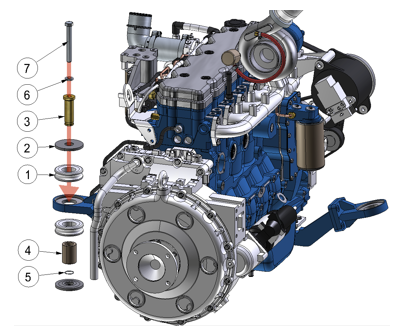

Overview of Solid Edge Technical Publications
Solid Edge provides two related, yet independent authoring applications for communicating the correct manufacturing, installation, and maintenance procedures for your designs:
-
Solid Edge Illustrations
-
Solid Edge 3D Publishing
Use them to create and publish illustrated work instructions, operations manuals, service guides, and drill-down parts catalogs from your Solid Edge models. Both products use the same 3D tools, which makes it easy to learn one product and quickly transition to the other for different uses.
Use the Solid Edge Technical Publications applications to:
-
Quickly create detailed illustrations of your designs.
-
Use animations to clearly communicate how your products work.
-
Publish interactive digital documents for manufacturing work instruction packages.
-
Create comprehensive maintenance manuals.
-
Publish easy-to-navigate spare parts catalogs that encourage your customers to source their spare parts directly from you.

Which application should I choose?
The application you choose—Solid Edge Illustrations or Solid Edge 3D Publishing—depends on what you want to do. To provide some guidance, the following table compares the high-level capabilities of each.
|
Description |
Solid Edge Illustrations |
Solid Edge 3D Publishing |
|
Type of output |
Technical illustrations |
Technical documentation |
|
Author |
Create detailed illustrations from a 3D model. |
Create multiple-page documents with embedded 3D models. Add interactive (click-able) objects such as buttons, text boxes, and tables. |
|
Document features |
Single-page templates for print PDF and HTML5 outputs |
Full-featured, multiple-page, customizable documents Multiple 3D files in a single document |
|
Print output |
Batch creation of vector files or raster images from illustrations |
Printed multiple-page document or static PDF |
|
Interactive 3D PDF output |
Single-page template |
Entire document is published to PDF. |
|
Interactive 3D HTML5 output |
Model-only or single-page template |
Entire document is published to HTML |
|
Working file format |
Solid Edge Model (QSM) |
Solid Edge Document (QSD) |
|
Interoperability |
Saves Solid Edge Model (QSM) files, which can be imported into Solid Edge 3D Publishing. |
Exports Solid Edge Model (QSM) files, which can be opened with Solid Edge Illustrations. |
|
Associative to Solid Edge model |
Yes |
Yes |
|
Support for other CAD data |
Yes |
Yes |
You also can use both products together to streamline the technical documentation process. For example, one person can use Solid Edge Illustrations to create the illustrations, and another person can use Solid Edge 3D Publishing to include those illustrations in a printed manual or interactive 3D document.
Getting started
If you have a Solid Edge Technical Publications license, then you can use either of the technical publications applications with your Solid Edge 3D models.
To begin, do the following:
-
Open a Solid Edge part, sheet metal, or assembly document in Solid Edge.
-
On the ribbon, choose one of the following commands:
-
Tools tab→Environs group→Solid Edge Illustrations .
-
Tools tab→Environs group→Solid Edge 3D Publishing .
Your Solid Edge model is opened in the selected application on your computer. A separate icon is added to your task bar.
Example: -
-
To begin creating technical illustrations or publications, begin by reviewing the appropriate workflow:
Note:You also can use the File menu→Save As tab→Save As command to save a Solid Edge model file to the (*.qsm) format, which can be opened in Solid Edge Illustrations.
Help for Solid Edge Technical Publications
You can access the full set of web help for Solid Edge Technical Publications by doing either of the following:
-
When you have either of the applications open—In the top-right corner of the application window, click the Help button , and then use the contents pane to browse to the appropriate section.
-
Access the web help directly—Solid Edge Technical Publications.
Comparison of input and output formats
|
Function |
Solid Edge Illustrations |
Solid Edge 3D Publishing |
|
Open |
Solid Edge 3D models |
Solid Edge 3D models |
|
Import |
Other 3D CAD |
3D CAD, text, images, Solid Edge model (QSM) |
|
Save/Open |
Solid Edge model (QSM) |
Solid Edge document (QSD) |
|
Export |
N/A |
Solid Edge model (QSM) |
|
Save As... |
N/A |
Solid Edge template (QST) |
|
Publish |
Raster images Vector graphics Movies Template-based 3D PDF Template-based HTML5 |
Printed documentation PDF documents Custom 3D PDF documents Custom HTML5 documents |